Modulo 4 · Esercizio 6: Report e audit con PowerShell
Passo 1 · Preparazione dell'ambiente PowerShell
Accesso alla VM SEA-DEV1 come administrator, con credenziali admin del tenant
-
1. Aprire Visual Studio Code con la modalità PowerShell ISE già abilitata (vedi Modulo 1 - Esercizio 4).
-
2. Verificare che i moduli PnP.PowerShell e Microsoft.Graph siano già installati (Modulo 1 - Esercizio 4). In caso contrario:
-
3. Tutti gli script di questo esercizio si autenticano in modalità app-only, riutilizzando la stessa Enterprise Application e lo stesso certificato creati nel Modulo 1 - Esercizio 5 (registrazione app +
New-PnPAzureCertificate+ import del certificato sul certificate store della VM). Impostare le variabili comuni una sola volta a inizio sessione:
$AppId = "<APP_ID_dell'Enterprise_Application>"
# da Modulo 1 - Esercizio 5
$TenantId = "<TENANT_ID>"
$Thumbprint = "<THUMBPRINT_del_certificato>"
# annotato al Modulo 1 - Esercizio 5, Passo 4
$AdminSiteUrl = "https://tenant_name-admin.sharepoint.com"
# dove tenant_name è il nome del proprio tenant
Attenzione
Connect-SPOService in app-only richiede un'app con permesso SharePoint > Sites.FullControl.All (application) e consenso amministrativo, già configurata nel Modulo 1 – Esercizio 5. Il file .pfx contiene la chiave privata: proteggerlo con una password e non condividerlo.
- 4. Connettersi con Microsoft Graph usando il certificato (come già fatto nel Modulo 1 - Esercizio 5):
Connect-MgGraph -ClientId $AppId -TenantId $TenantId -CertificateThumbprint $Thumbprint
Get-MgContext # verificare che AuthType risulti "AppOnly"
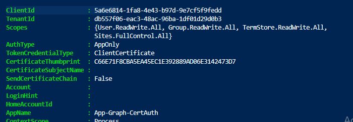
- 5. Connettersi con PnP PowerShell, in app-only con lo stesso certificato:
- 6. Connettersi con SharePoint Online Management Shell (Connect-SPOService), che supporta anch'esso l'autenticazione app-only con certificato:
Connect-SPOService -Url $AdminSiteUrl -ClientId $AppId -TenantId $TenantId -CertificatePath "C:\Cert\cert.pfx"
Script 1 · Cestino di 1° e 2° livello di tutti i OneDrive (PnP + SPO)
- 1. Prerequisito: su
SEA-DEV3con User03 cancellare un documento per metterlo nel cestino di OneDrive. -
2. Su
SEA-DEV1come Administrator creare la cartella Temp in: -
3. Scaricare lo Script1.ps1 presente in:
-
4. Aprire il file su Visual Studio Code.
- 5. Eseguire lo script su Power Shell.
# Report OneDrive: storage in MB, cestini in KB
# Requisiti: Microsoft.Online.SharePoint.PowerShell + PnP.PowerShell
# Connessione app-only gia' eseguita. Riusa $AppId, $TenantId, $Thumbprint.
$OutputCsv = "C:\Temp\Report_Cestini_OneDrive.csv"
$oneDriveSites = Get-SPOSite -IncludePersonalSite $true -Limit All -Filter "Url -like '-my.sharepoint.com/personal/'"
$report = foreach ($site in $oneDriveSites) {
$s = Get-SPOSite -Identity $site.Url
Connect-PnPOnline -Url $s.Url -ClientId $AppId -Tenant $TenantId -Thumbprint $Thumbprint
$l1 = Get-PnPRecycleBinItem -FirstStage -RowLimit 500000 -ErrorAction SilentlyContinue
$l2 = Get-PnPRecycleBinItem -SecondStage -RowLimit 500000 -ErrorAction SilentlyContinue
# Size in BYTE: cast a [long] prima di sommare
$l1Bytes = ($l1 | ForEach-Object { [long]$_.Size } | Measure-Object -Sum).Sum
$l2Bytes = ($l2 | ForEach-Object { [long]$_.Size } | Measure-Object -Sum).Sum
if (-not $l1Bytes) { $l1Bytes = 0 }
if (-not $l2Bytes) { $l2Bytes = 0 }
[PSCustomObject]@{
OneDriveUrl = $s.Url
StorageTotaleMB = "{0:N2}" -f $s.StorageQuota
StorageUsatoMB = "{0:N2}" -f $s.StorageUsageCurrent
CestinoLivello1KB = "{0:N2}" -f ($l1Bytes / 1KB)
CestinoLivello2KB = "{0:N2}" -f ($l2Bytes / 1KB)
}
}
$report | Format-Table -AutoSize
$report | Export-Csv -Path $OutputCsv -NoTypeInformation -Encoding UTF8
Suggerimento
Su tenant con molti OneDrive lo script può impiegare parecchio tempo e incorrere in throttling (HTTP 429). Per report su larga scala valutare Microsoft Graph Data Connect o i report di utilizzo.
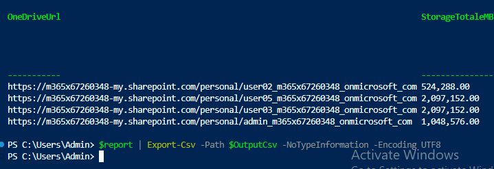
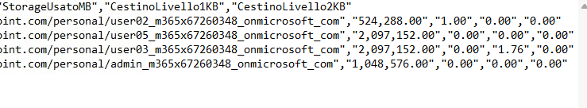
Script 2 · Report permessi dei siti (con sottositi), adattato da PnP Script Samples
-
1. Scaricare Script2.ps1 presente in:
-
2. Aprire lo Script su Visual Studio Code.
- 3. Sostituire il tenant_name con il proprio tenant del lab.
- 4. Eseguire lo Script sul Power Shell.
# Richiede il modulo: PnP.PowerShell
# Login con app registration Full Control (Sites.FullControl.All)
# Riutilizza $AppId, $TenantId, $Thumbprint
$TenantAdminUrl = "https://tenant_name-admin.sharepoint.com"
$OutputCsv = "C:\Temp\Report_Permessi_Tenant.csv"
$permessi = @()
function Get-PermessiWeb($web) {
Get-PnPProperty -ClientObject $web -Property HasUniqueRoleAssignments, RoleAssignments, Url, Title | Out-Null
$permessiUnivoci = $web.HasUniqueRoleAssignments
foreach ($assegnazione in $web.RoleAssignments) {
Get-PnPProperty -ClientObject $assegnazione -Property RoleDefinitionBindings, Member | Out-Null
$livelli = $assegnazione.RoleDefinitionBindings | Where-Object { $_.Name -ne "Limited Access" } | Select-Object -ExpandProperty Name
if (-not $livelli -or $livelli.Count -eq 0) { continue }
$tipoPrincipal = $assegnazione.Member.PrincipalType
if ($tipoPrincipal -eq "SharePointGroup") {
try {
$membriGruppo = Get-PnPGroupMember -Identity $assegnazione.Member.LoginName -ErrorAction Stop
} catch { $membriGruppo = @() }
foreach ($utente in $membriGruppo) {
$script:permessi += [PSCustomObject]@{ SitoUrl = $web.Url; SitoTitolo = $web.Title; Utente = $utente.Title; TipoPrincipal = $tipoPrincipal; LivelloPermesso = ($livelli -join ","); Gruppo = $assegnazione.Member.Title; PermessiUnivoci = $permessiUnivoci }
}
} else {
$script:permessi += [PSCustomObject]@{ SitoUrl = $web.Url; SitoTitolo = $web.Title; Utente = $assegnazione.Member.Title; TipoPrincipal = $tipoPrincipal; LivelloPermesso = ($livelli -join ","); Gruppo = "Permesso diretto"; PermessiUnivoci = $permessiUnivoci }
}
}
}
# 1) Connessione admin ed enumerazione di TUTTI i siti
Connect-PnPOnline -Url $TenantAdminUrl -ClientId $AppId -Tenant $TenantId -Thumbprint $Thumbprint
$siti = Get-PnPTenantSite | Where-Object { $_.Template -notin @("SRCHCEN#0","SPSMSITEHOST#0") }
Write-Host "Trovati $($siti.Count) siti da analizzare." -ForegroundColor Cyan
# 2) Ciclo su ogni sito + sottositi
foreach ($sito in $siti) {
Write-Host "Analizzo: $($sito.Url)" -ForegroundColor Yellow
try {
Connect-PnPOnline -Url $sito.Url -ClientId $AppId -Tenant $TenantId -Thumbprint $Thumbprint -ErrorAction Stop
$webPrincipale = Get-PnPWeb -Includes RoleAssignments
Get-PermessiWeb $webPrincipale
$sottositi = Get-PnPSubWeb -Recurse -ErrorAction SilentlyContinue
foreach ($sottosito in $sottositi) {
Connect-PnPOnline -Url $sottosito.Url -ClientId $AppId -Tenant $TenantId -Thumbprint $Thumbprint
Get-PermessiWeb $sottosito
}
}
catch {
Write-Warning "Impossibile analizzare $($sito.Url): $($_.Exception.Message)"
}
}
# 3) Export finale
$permessi | Export-Csv -Path $OutputCsv -NoTypeInformation -Encoding UTF8
Nota
Lo script è adattato dai PnP Script Samples: i campioni della community non hanno supporto ufficiale Microsoft, verificarli sempre in un tenant di test.
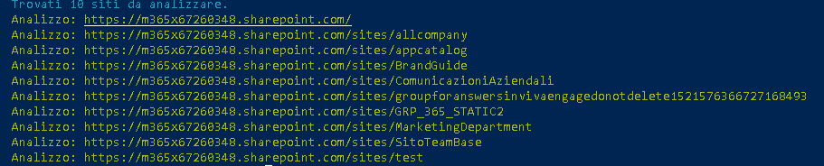
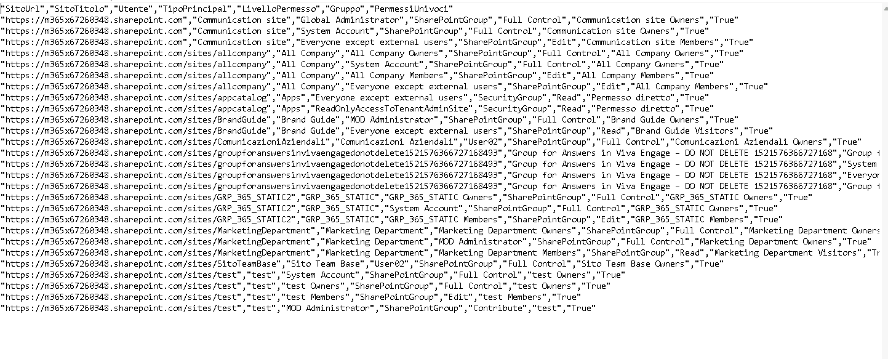
Script 3 · Elenco utenti guest in tutti i siti del tenant
Per questo script è necessario avere almeno un Guest in un sito SharePoint.
- 1. Aprire su
SEA-DEV2il sito SharePoint Marketing Department. - 2. Premere su Settings in alto a destra.
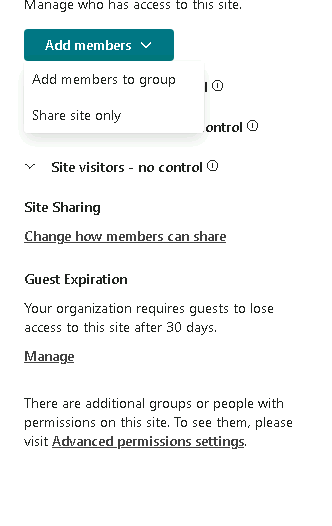
- 3. Site Permissions -> Add members -> Add members to group e invitare un account personale.
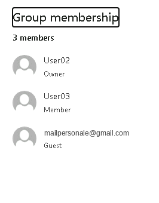
- 4. Tornare su
SEA-DEV1come Administrator. -
5. Scaricare Script3.ps1 presente in:
-
6. Aprire il file su Visual Studio Code.
- 7. Eseguire lo Script sul Power Shell.
# Richiede il modulo: PnP.PowerShell
# Login con app registration Full Control + Graph (GroupMember.Read.All / Directory.Read.All)
# Riutilizza $AppId, $TenantId, $Thumbprint, $AdminSiteUrl
Connect-PnPOnline -Url $AdminSiteUrl -ClientId $AppId -Tenant $TenantId -Thumbprint $Thumbprint
$guestReport = @()
# FONTE 1 - Guest membri dei gruppi Microsoft 365 (siti Teams-connected)
$gruppi = Get-PnPMicrosoft365Group
Write-Host "Gruppi M365 da analizzare: $($gruppi.Count)" -ForegroundColor Cyan
foreach ($g in $gruppi) {
$membri = Get-PnPMicrosoft365GroupMember -Identity $g.Id -ErrorAction SilentlyContinue
foreach ($m in $membri) {
if ($m.UserType -eq "Guest" -or $m.UserPrincipalName -like "*#EXT#*") {
$guestReport += [PSCustomObject]@{
SitoUrl = $g.SiteUrl
SitoTitolo = $g.DisplayName
NomeGuest = $m.DisplayName
EmailGuest = $m.Email
Origine = "Gruppo M365"
LoginName = $m.UserPrincipalName
}
}
}
}
# FONTE 2 - Guest con permessi diretti / gruppi SP su OGNI sito del tenant
# (copre communication site, siti classici, permessi rotti, ecc.)
$siti = Get-PnPTenantSite | Where-Object { $_.Template -notlike "SPSPERS*" }
Write-Host "Siti da analizzare: $($siti.Count)" -ForegroundColor Cyan
foreach ($sito in $siti) {
Write-Host "Analizzo: $($sito.Url)" -ForegroundColor Yellow
try {
Connect-PnPOnline -Url $sito.Url -ClientId $AppId -Tenant $TenantId -Thumbprint $Thumbprint -ErrorAction Stop
$guestSito = Get-PnPUser | Where-Object { $_.LoginName -like "*#ext#*" -or $_.LoginName -like "*urn:spo:guest*" }
foreach ($u in $guestSito) {
$guestReport += [PSCustomObject]@{
SitoUrl = $sito.Url
SitoTitolo = $sito.Title
NomeGuest = $u.Title
EmailGuest = $u.Email
Origine = "Permesso sito"
LoginName = $u.LoginName
}
}
}
catch {
Write-Warning "Errore su $($sito.Url): $($_.Exception.Message)"
}
}
# Export finale (deduplica per sito + guest)
$guestReport |
Sort-Object SitoUrl, EmailGuest -Unique |
Export-Csv -Path "C:\Temp\Report_Guest_Sites.csv" -NoTypeInformation -Encoding UTF8
Write-Host "Trovati $($guestReport.Count) guest totali." -ForegroundColor Green
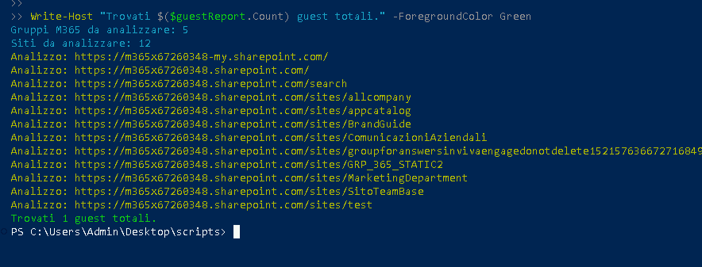
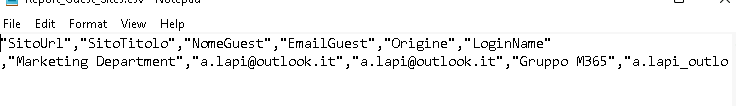
Script 4 · Audit file nelle librerie documentali
-
1. Scaricare Script4.ps1 presente in:
-
2. Aprire lo Script su Visual Studio Code.
- 3. Sostituire il tenant_name con il proprio.
- 4. Eseguire lo Script sul Power Shell.
# Richiede il modulo: PnP.PowerShell
# Riutilizza $AppId, $TenantId, $Thumbprint impostate al Passo 1
$SiteUrl = "https://tenant_name.sharepoint.com/sites/MarketingDepartment"
Connect-PnPOnline -Url $SiteUrl -ClientId $AppId -Tenant $TenantId -Thumbprint $Thumbprint
# Seleziona solo le librerie documentali reali (esclude liste di sistema)
$librerie = Get-PnPList -Includes IsSystemList, RootFolder | Where-Object {
($_.BaseType -eq "DocumentLibrary" -and $_.IsSystemList -eq $false)
}
$librerie | ForEach-Object {
Get-PnPListItem -List $_.RootFolder.Name | Where-Object { $_.FieldValues.FSObjType -ne 1 } |
Select-Object `
@{n = "Libreria"; e = { $_.ParentList.Title } },
@{n = "File"; e = { $_.FieldValues.FileRef } },
@{n = "CreatoDa"; e = { ($_.FieldValues.Created_x0020_By).Split("|")[2] } },
@{n = "DataCreazione"; e = { $_.FieldValues.Created } },
@{n = "ModificatoDa"; e = { ($_.FieldValues.Modified_x0020_By).Split("|")[2] } },
@{n = "DataModifica"; e = { $_.FieldValues.Modified } }
} | Export-Csv -Path "C:\Temp\Report_File_Librerie.csv" -NoTypeInformation -Append -Encoding UTF8
Import-Csv "C:\Temp\Report_File_Librerie.csv" | Format-Table -AutoSize
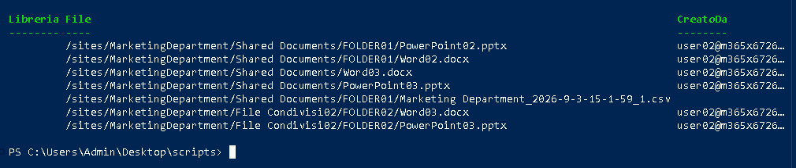
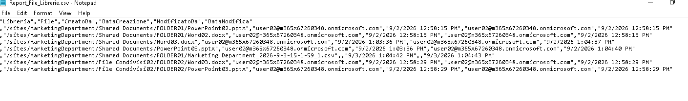